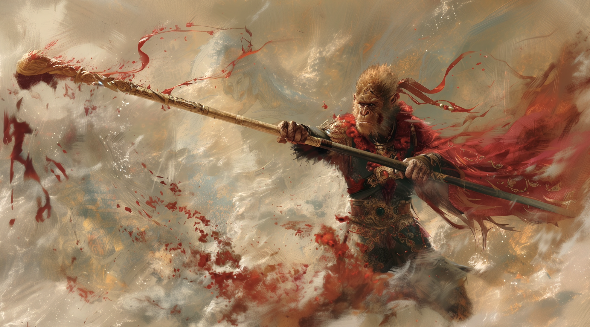

Sun Wukong - 孫悟空
Sun Wukong, also known as the Great Sage is a legendary figure in Chinese mythology, depicted in the novel "Journey to the West" Writtien in 16th Century during the Ming Dynasty.
Sun Wukong, also known as the Great Sage is a legendary figure in Chinese mythology, depicted in the novel "Journey to the West" Writtien in 16th Century during the Ming Dynasty.